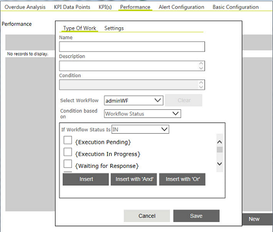

No
Performance
You can use the Performance Analysis configuration tab to define criteria for work to be monitored for resource analysis, work, and resource performance.
Steps to configure Performance Analysis:
- Define type of work to be monitored. To add a new work type, click New Type of Work.
- Enter the name for the type of work.
- Setup conditions for monitoring the work. Work types can be configured to include conditions that comprise workflow status, activity status, activity in link conditions, work item fields and queues.
- The options displayed below the 'Condition based on' field depend on the condition type.
- Click Insert with And or Insert with Or to build the condition further.
 - In Settings tab, select the Work Item fields to be monitored. All work item fields in the activities and workflows selected in Type of Work are available for selection.
- Select Consider Acknowledgment Date for Work Item to consider the time for the work item from the acknowledgment date and not on assignment date.
- Select a date range for measuring performance. Select Apply date range for weighted average to use the same period for calculating weighted average. A resource performance is compared with the weighted average and slotted accordingly.
- Select the date range for calculating the weighted average of the performance for this work type.